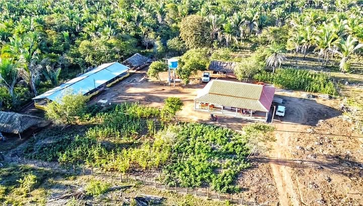
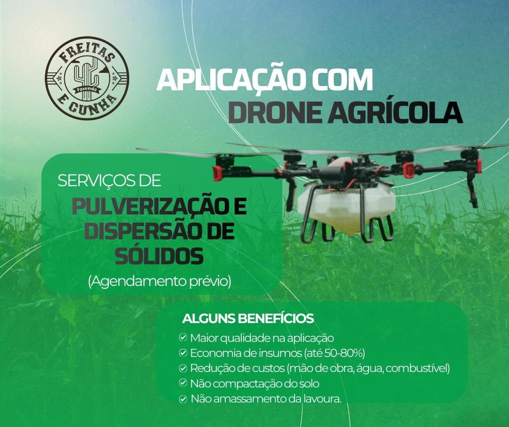
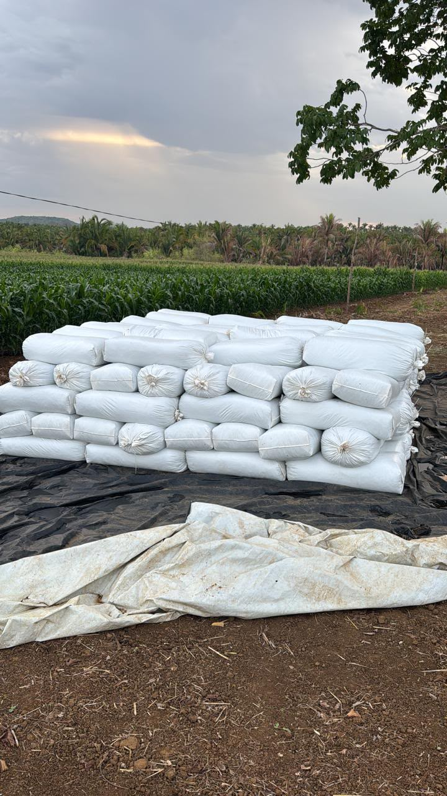
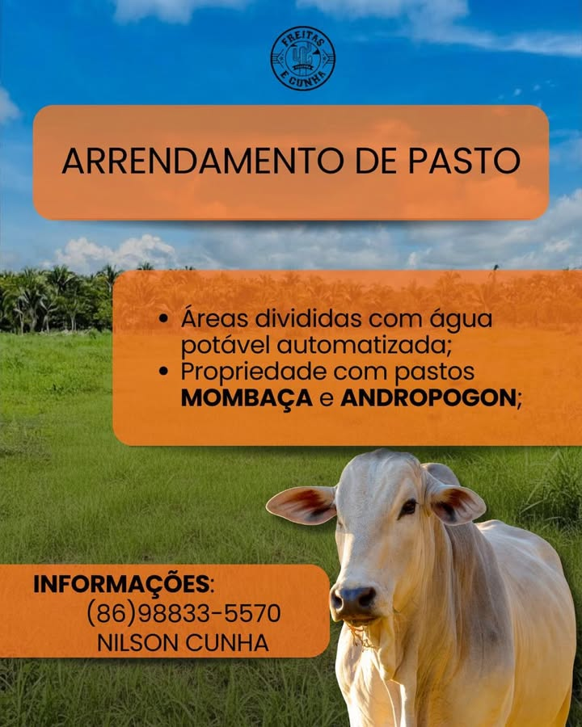
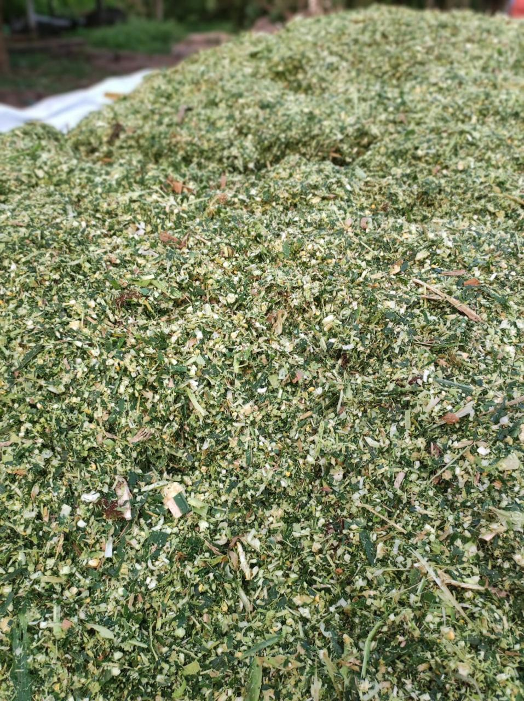
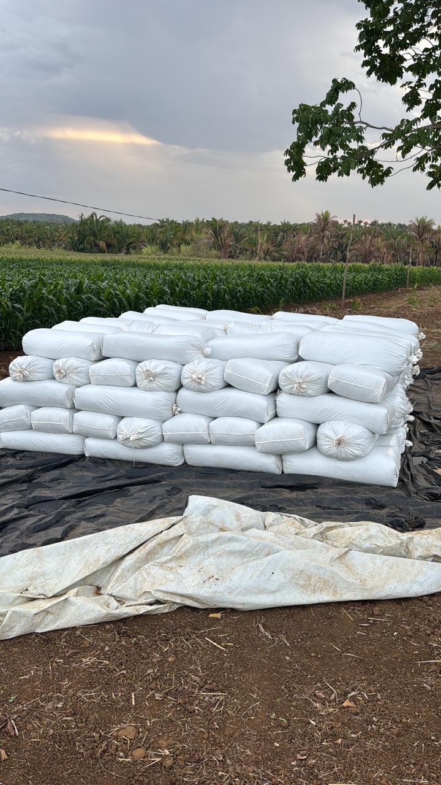
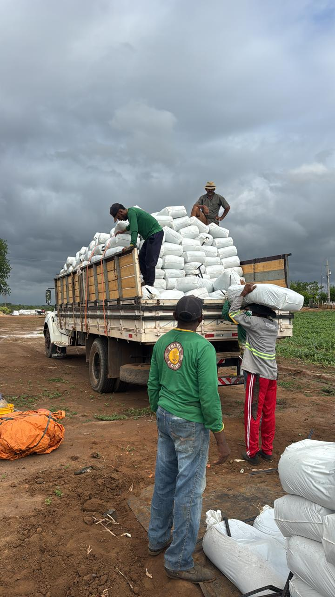
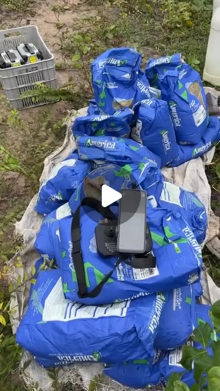

Produção de silagem de milho ensacada em volumes padronizados de 25 kg, prestação de serviços com drone agrícola (pulverização e dispersão de sementes), pecuária de corte e arrendamento de pasto com água automatizada no Maranhão.

A Fazenda Freitas e Cunha é uma propriedade rural dedicada à produção agropecuária integrada. Nosso compromisso é fornecer alimento volumoso de qualidade consistente para criadores, além de prestar serviços técnicos modernos que agregam valor às propriedades parceiras.
Do manejo da forragem de milho e ensacamento em fardos de 25 kg até a prestação de serviços com drone agrícola para aplicações de precisão, aliamos práticas eficientes de campo à negociação direta e transparente com pecuaristas e agricultores.
Conheça as quatro áreas de atuação da fazenda, com foco em fornecimento forrageiro seguro, tecnologia de aplicação aérea e estrutura de pastagem.
Forragem de milho colhida no momento ideal de maturação da planta inteira, picada uniformemente e ensacada em embalagens reforçadas de 25 kg para conservação anaeróbica consistente.

Tecnologia AéreaPrestação de serviços de aplicação agrícola de precisão: pulverização foliar, controle pontual de plantas daninhas e dispersão aérea de sementes de pastagem e insumos sólidos.

Manejo NutricionalBovinos adaptados às condições do Maranhão, criados com manejo sanitário preventivo e alimentação com volumoso de alto padrão energético.

InfraestruturaPiquetes rotacionados formados com capim Mombaça e Andropogon, estruturados com cercas seguras e bebedouros de água automatizada em todas as repartições.
Mais agilidade, economia de calda e máxima eficácia para sua lavoura ou pastagem. Atendimento profissional sob agendamento prévio no Maranhão e região.
A aplicação com drone agrícola elimina as perdas por rodado de trator, evita a compactação do solo e permite a entrada imediata na área mesmo após chuvas fortes, com vórtice descendente (downwash) que melhora a penetração da calda na vegetação.
Evita perdas mecânicas provocadas pelo rodado de tratores em lavouras e pastos.
Preserva a estrutura física do solo e opera sem risco de atolamento em áreas úmidas.
Gotas com penetração profunda que reduzem a deriva e otimizam a cobertura foliar.
Capacidade de operar em curvas de nível, baixadas e áreas com relevo acidentado.
Contato Direto: (86) 98833-5570 (Nilson Cunha) · Agendamento e raio de atendimento sob consulta
Registros em vídeo da tecnologia com drone agrícola (voo, pulverização e semeadura) e do ciclo produtivo de silagem de milho da colheita à expedição.
Assistir aos 4 Vídeos de OperaçãoForragem colhida no momento ideal de maturação e ensacada em fardos de 25 kg para manter o valor nutricional durante o ano todo.
A silagem da Fazenda Freitas e Cunha é produzida a partir de lavouras próprias de milho, cortadas no momento ideal de maturação da planta inteira para equilibrar fibra digestível e energia. A picagem uniforme proporciona excelente compactação anaeróbica no ensacamento.
O ensacamento em embalagens reforçadas de 25 kg proporciona manuseio simples e prático no trato diário: o produtor utiliza somente o necessário para cada refeição do rebanho, preservando o restante sem exposição ao oxigênio.



Filmagens reais captadas diretamente nas nossas áreas de produção: aplicação aérea de precisão, semeadura de pastagens, colhedora forrageira no milharal e expedição de fardos de 25 kg.
Voo rasante sobre a lavoura com vórtice descendente para cobertura foliar uniforme, operado por Nilson Cunha.
Ver publicação no Instagram →Semeadura aérea de pastagem com sementes América de alta germinação, estação de recarga com gerador e telemetria precisa.
Ver publicação no Instagram →Colhedora forrageira picando milho de planta inteira no momento ideal de corte para compactação e alto valor nutricional.
Consultar lote no WhatsApp →Caminhão truck totalmente carregado com sacos padronizados de 25 kg amarrados com catracas, pronto para envio ao produtor.
Cotar carga no WhatsApp →Estime a quantidade aproximada de sacos de 25 kg e o volume total em quilos para o período de suplementação do seu rebanho.
Estimativa zootécnica de referência para planejamento de cocho.
Registros autênticos da estrutura, da sede, da lavoura de milho, do ensacamento de 25 kg, da equipe e da tecnologia de drone.

Trabalhamos com seriedade técnica para construir parcerias duradouras com criadores de bovinos e produtores da região.
Sem intermediários. Você conversa e alinha as condições diretamente com a equipe da fazenda pelo WhatsApp comercial.
Sacos reforçados e compactados no peso confirmado de 25 kg, preservando a silagem contra a entrada de oxigênio.
Carregamento organizado na sede da fazenda ou cotação de frete parceiro programado para sua localidade.
Adoção de drone agrícola e água automatizada nos piquetes para garantir precisão e ganho de manejo real.
Preencha os campos abaixo e clique no botão para abrir uma conversa no WhatsApp comercial com seus dados organizados.
Selecione a atividade de seu interesse:
Atendimento comercial aos produtores rurais com agilidade e clareza.